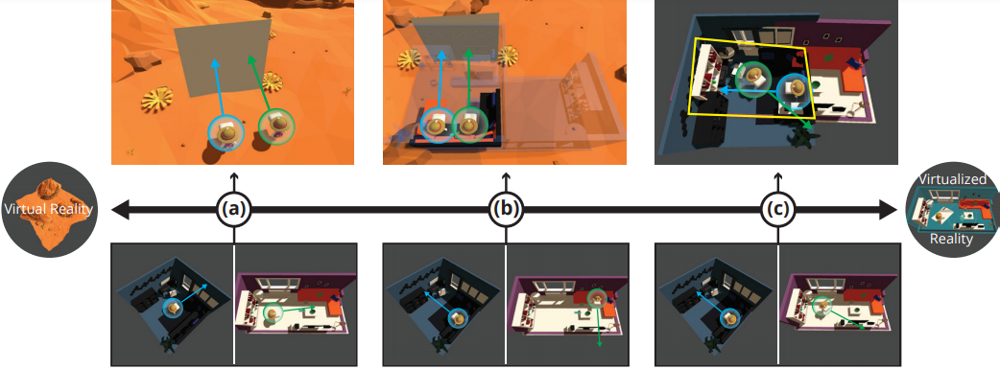

Abstract
How do you design a physically-accurate social VR space for multiple users when one has a small office and the other has a gymnasium? We discuss the trade-offs and challenges for designing physically-accurate VR spaces for multiple users via the physical-virtual spectrum, and discuss possible approaches for resolving the conflicts between VR users' varying physical environments. We provide initial discussion and directions for future research.
 Figure 1: Physical-virtual conformity as a combination of resemblance to the physical world (virtualized reality) and the resolution of these spaces to each other. Consider the spectrum above, on the far left of the spectrum is a virtual reality and on the far right is a virtualized reality [2]. Moving along the spectrum requires different resolution strategies: a) two users (blue and green arrows below) are in their own reality and meet in a virtual reality (above) where the system resolves their orientations; b) two users are in their own reality (below) but their couches are in a partial virtualized reality that the system resolves by rotating and merging them together (above); and c) two users are in their own virtualized reality (below) and meet up in a shared virtual reality space where the system resolves their spaces to maximize shared presence (above). The yellow square is the greatest common space between the users [4].Introduction
Virtual reality (VR) allows people to spend time together and feel socially present with others regardless of the distance between them. As consumer-accessible VR devices re-energize public interest in VR, and the COVID-19 pandemic pushes social VR applications like Rec Room and VRChat to significant user activity milestones [3, 7], the design of social VR spaces becomes all the more crucial to the technology’s mainstream appeal. An under-considered factor in the design of social VR is how the user’s physical space can be used to aid their sense of presence in around the people they meet in VR. Converting the user’s physical space into a digital copy of itself, a virtualized reality [2], has been used in the past to allow for navigation, blending, and timemanipulation [1, 5]. However, there has been little research into how these virtualized realities can be mapped when multiple users share the same virtual space or how this can be used to enhance their shared sense of presence and belonging.
As an example, imagine three users want to watch a movie in VR, sitting together in a VR theatre. All three users are in different physical spaces with different physical seating arrangements, and as such the VR theatre application must reconcile these differences in seating to create the illusion of the users sitting "together" (Figure 1b). How should the application best prioritize (a) minimizing friction by tailoring the environment to the user’s physical space; (b) maintaining this physical-virtual connection for multiple users; and (c) achieving this balance with minimal manual intervention? This paper presents a simple design space to examine applications’ considerations for their users’ physical environments, and an initial discussion of ways to resolve these physical-virtual space conflicts for multiple users.
Physical-Virtual Conformity and Conflicts
We discuss two elements of multi-user spatially-accurate environments and represent them in a concise uni-dimensional physical-virtual spectrum (Figure 1). The poles of the spectrum represent two opposing environments. On the left of the spectrum is a virtual reality. This can represent any kind of virtual environment where users meet in VR, like VRChat [3], and has no basis in physical reality. The right side of the spectrum is a complete virtualized reality [2]. This is a copy of the user’s physical world represented in a virtual reality environment. The canonical representation of this would be a virtual environment that is one-to-one with reality and is indistinguishable. The space between these two poles represents partial representations of these realties merged together,so we can have a virtualized table merged with a virtual environment. This can be thought of as an inversion of the Reality-Virtuality Continuum [6].
From the perspective of the system, conflicts can occur between either the virtual environment and a single virtualized environment, or between each of the users’ virtualized environment in their shared space. So, for each point on this spectrum, different resolution strategies need to be adopted to resolve conflicts during merging in order to create a shared sense of presence and belonging.
Resolving Physical-Virtual Conflicts
Resolving conflicts within multiple varying user spaces is an open VR design challenge. Our spectrum highlights the difficulty in creating environments that match each user’s physical environment while maintaining each user’s connection to their individual physical space. To address this, we propose three separate resolution strategies that could be employed by future designers and researchers.
- Orientation-centric resolution matches each user’s physical direction in the room, establishing a common "forward" direction in the space (e.g. toward a shared common screen, Figure 1a).
- Object-centric resolution involves designating a common object or geometric feature as a coordinate-space anchor, like the couches in the "VR theatre" example (see Figure 1b).
- Geometry-centric resolution involves culling outlying geometry to establish a "greatest common space" between users’ physical areas (see Figure 1c).
Conclusion and Future Work
Reducing the friction between users’ real and virtual spaces will allow mixed-reality social activities to become much more comfortable and engaging. Our physical-virtual spectrum provides an initial discussion of the topic, and future work will involve a series of usability experiments to determine the areas of this spectrum that provide the most value for social environments in VR.
References
- Jeremy Hartmann, Christian Holz, Eyal Ofek, and Andrew D. Wilson. 2019. RealityCheck: Blending Virtual Environments with Situated Physical Reality. In Proceedings of the 2019 CHI Conference on Human Factors in Computing Systems - CHI ’19. ACM Press, New York, New York, USA, 1–12. https://doi.org/10.1145/3290605.3300577
- Takeo Kanade, Peter Rander, and P.J. Narayanan. 1997. Virtualized reality: constructing virtual worlds from real scenes. IEEE Multimedia 4, 1 (1997), 34–47. https://doi.org/10.1109/93.580394
- Ben Lang. 2020. Social VR App VRChat is Seeing Record Usage Amidst the Pandemic. https://www.roadtovr.com/vrchatrecord-users-coronavirus/ (Accessed on 02/17/2021).
- Lara Lesmes, Fredrik Hellberg, and Inna Fleišer. 2019. The Venn Room - spacepopular. http://www.spacepopular.com/ exhibitions/2019---the-venn-room (Accessed on 02/22/2021).
- David Lindlbauer and Andy D Wilson. 2018. Remixed Reality: Manipulating Space and Time in Augmented Reality. In Proceedings of the 2018 CHI Conference on Human Factors in Computing Systems. ACM, New York, NY, USA, 1–13. https://doi.org/10.1145/3173574.3173703
- Paul Milgram and Fumio Kishino. 1994. A Taxonomy of mixed reality visual displays. IEICE Transactions on Information and Systems 77, 12 (1994), 1321–1329.
- Thomas Wilde. 2021. ‘Rec Room’ Now Has Over 1 Million Monthly Active VR Users. https://www.roadtovr.com/recroom-1-million-monthly-active-users/ (Accessed on 02/17/2021).
Contact Us
Questions? Feel free to contact:
- (PhD student, University of Waterloo)
jdwentze [at] uwaterloo.ca - (Undergrad student, University of Waterloo)
d332kim [at] uwaterloo.ca - (PhD student, University of Waterloo)
j3hartma [at] uwaterloo.ca
Johann Wentzel, Daekun Kim, Jeremy Hartmann, University of Waterloo © 2021